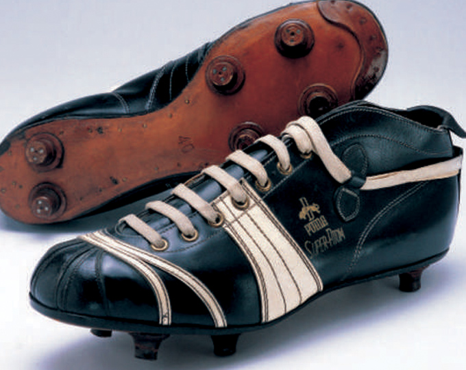

홈 > 브랜드 매거진 > 푸마
푸마
푸마(Puma)는 독일 헤르초겐아우라흐에 본사를 둔 스포츠 의류·신발 기업이다.
산업 분야 스포츠·아웃도어 · 공개 등급 편집 검수 · 브랜드 평가 4.7 ★

한눈에 보는 브랜드
푸마는 1948년 루돌프 다슬러(Rudolf Dassler)가 독일 바이에른주 헤르초게나우라흐에서 세운 글로벌 스포츠용품 기업이다. 동생 아돌프 다슬러와의 결별로 형제가 운영하던 신발 공장이 둘로 쪼개지면서, 형 루돌프가 강 건너편에 독립해 만든 회사가 출발점이다.
도약하는 퓨마와 폼스트립을 상징으로 축구화·러닝·라이프스타일을 아우르며, 나이키·아디다스에 이은 세계 3위권 스포츠 브랜드로 자리한다. 2024년 기준 연 매출은 약 88억 유로, 임직원은 세계적으로 약 2만1천 명 규모다.
브랜드 관점
핵심은 포지셔닝이다. 퍼포먼스 1위를 다투는 나이키·아디다스와 정면 경쟁하기보다, 푸마는 스포츠 헤리티지를 패션·문화 코드로 번역하는 길을 택했다.
스웨이드 계열의 코트 슈즈, 모터스포츠·축구 유산, 셀럽·디자이너 협업이 그 축이다. 지배구조도 독특하다.
프랑스 피노 가문의 투자회사 아르테미스가 약 29퍼센트를 쥔 최대주주이며, 같은 가문이 구찌·생로랑을 거느린 럭셔리그룹 케어링도 지배한다. 다만 2024년 순이익이 뒷걸음치고, 2025년 들어 미국 관세 부담과 전략 이견으로 최고경영자가 교체되는 등 실적 부진 국면에 들어섰다.
한국에서는 직진출 이후 적자를 겪었으나 스피드캣을 앞세운 저지상고(로 프로파일) 트렌드와 로제 앰배서더 발탁으로 반등에 성공했다는 점이 차별적 함의다.
시작과 성장
창업의 뿌리는 형제 불화다. 루돌프와 아돌프 다슬러 형제는 1924년부터 헤르초게나우라흐에서 '다슬러 형제 신발공장'을 함께 운영하며 1936년 베를린 올림픽 육상 스타에게 자사 스파이크를 신기는 성과까지 거뒀다.
그러나 제2차 세계대전을 거치며 성격 차이와 갈등이 깊어졌고, 1948년 형제는 결국 갈라섰다. 형 루돌프는 아우라흐강 건너편에 자기 공장을 세워 처음에는 'RUDA'라는 이름을 붙였다가 곧 동물 이름을 딴 '푸마'로 바꿨고, 동생 아돌프는 아디다스를 세웠다.
이 분열은 두 회사뿐 아니라 도시 전체를 둘로 나눠, 주민들이 어느 회사 직원이냐에 따라 다른 가게를 이용할 정도였다. 푸마는 곧장 축구화에 집중해 1950~60년대 유럽 무대에서 이름을 알렸고, 펠레 등 스타 선수를 후원하며 국제적 스포츠 브랜드로 확장해 나갔다.
브랜드 아이덴티티
푸마의 정체성은 민첩함과 야생성이다. 도약하는 퓨마 형상의 캣 로고는 1968년 시각 정체성의 중심으로 자리 잡아 속도·우아함·힘을 한 컷에 담았고, 신발 측면을 곡선으로 감싸는 폼스트립은 본래 보강용 부품에서 출발했으나 나이키 스우시, 아디다스 삼선과 어깨를 나란히 하는 식별 기호가 됐다.
브랜드는 'Forever Faster'를 표어로 삼아, 진지한 운동 성능과 거리 문화의 자유로움을 동시에 말하는 톤을 유지한다. 타깃은 스포츠와 패션의 경계를 즐기는 청년층과 셀럽 추종 소비자이며, 음악·모터스포츠·축구를 가로지르는 협업으로 그 목소리를 키운다.
제품과 서비스
대표선은 1968년 등장한 스웨이드로, 농구 코트화에서 힙합·스트리트 아이콘으로 변신한 스테디셀러다. 두툼한 레트로 러닝 실루엣인 RS-X 라인, 울트라·퓨처 같은 축구화, 골프·모터스포츠 장비가 포트폴리오를 채운다.
협업도 활발해 플레이스테이션·터틀스 같은 IP와의 RS-X는 미국 기준 120달러대, 스웨이드 협업은 100달러대에서 팔린다. 유통은 직영·온라인몰과 풋라커 등 멀티숍, 국내 백화점·로드숍을 함께 활용한다.
현재 상태
본사는 창업지인 독일 헤르초게나우라흐에 있으며 푸마SE라는 상장사 형태로 운영된다. 최대주주는 프랑스 피노 가문의 투자회사 아르테미스로 약 29퍼센트를 보유하고, 임직원은 세계적으로 약 2만1천 명, 2024년 연 매출은 약 88억 유로, 순이익은 약 2억8천만 유로 수준이다.
한국 법인 푸마코리아는 2024년 매출 약 1,473억원에 영업이익 약 66억원으로 흑자 전환했다. 2025년 단행된 최고경영자 교체 이후 구체적 향후 실적 목표는 미공개다.
타임라인
BI/CI 변천사
 BI/CI 아카이브BI/CI 아카이브
BI/CI 아카이브BI/CI 아카이브함께 읽을 브랜드
 스포츠·아웃도어 · 편집 검수아디다스
스포츠·아웃도어 · 편집 검수아디다스아돌프 다슬러가 1948년에 설립한 독일의 스포츠 브랜드로 운동화, 운동복, 운동용품 등을 제조 · 판매함. 아디다스의 정의 및 기원 아디다스(adidas)는 바이에...
스포츠·아웃도어 · 매거진 완성나이키나이키는 스포츠용품보다 자기극복의 서사를 더 강하게 판매하는 브랜드다. 신발과 의류는 제품이지만, 소비자가 실제로 구매하는 것은 기록을 갱신하고 자신을 증명하고 싶은...
리복(Reebok)은 영국 볼턴에서 시작된 운동화·스포츠 의류 브랜드이다.
 스포츠·아웃도어 · 편집 검수파타고니아
스포츠·아웃도어 · 편집 검수파타고니아파타고니아는 아웃도어 브랜드이면서 동시에 소비를 줄이라는 역설적 메시지로 신뢰를 쌓은 브랜드다. 제품을 파는 기업이지만 브랜드의 설득력은 자연, 책임, 오래 쓰는 태...
 스포츠·아웃도어 · 편집 검수Slazenger
스포츠·아웃도어 · 편집 검수Slazenger슬래진저(Slazenger)는 1881년 영국 런던에서 설립된 스포츠용품 브랜드로, 현존하는 세계에서 가장 오래된 스포츠 브랜드 중 하나로 꼽힌다. 테니스와 골프를...
 스포츠·아웃도어 · 편집 검수뉴발란스
스포츠·아웃도어 · 편집 검수뉴발란스뉴발란스(New Balance)는 미국 보스턴에 기반을 둔 비상장 운동화·스포츠 의류 기업이다.
Os
Osaka Candidate City 2008
스포츠·아웃도어 · 편집 검수Osaka Candidate City 2008Osaka Candidate City 2008는 2000년에 기록된 Olympic Design 계열의 브랜드 아이덴티티 사례입니다. Hakuhodo가 아이덴티티 작업...
 스포츠·아웃도어 · 자료 기반아크테릭스
스포츠·아웃도어 · 자료 기반아크테릭스아크테릭스(Arc'teryx)는 1989년 캐나다에서 창립한 아메르 스포츠 산하의 기술 중심 아웃도어 의류·장비 브랜드이다.